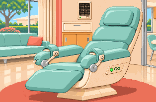

Rest Assured · activated state v03
Generated replacement. Owner visual approval pending.
Based on the original v01 chair. The rejected upright rings are replaced by low padded closures across the forward wrist-rest areas. A slightly reclined back and raised legrest reinforce activation.
Original Batch2 gallery · Built-in imagegen prompts · Dimensions, palette and hashes · Verification and decisions
Inviting initial chair and activated state · native
 Initial lounge · unchanged
Initial lounge · unchanged
Activated v03 · generated candidateThe closures seat onto armrest cradles where wrists rest, with short visible latch/linkage joins. Their channels run along the armrests. No upright freestanding rings, anatomy or torture-machine additions.
Native comparison · Exact4× comparison